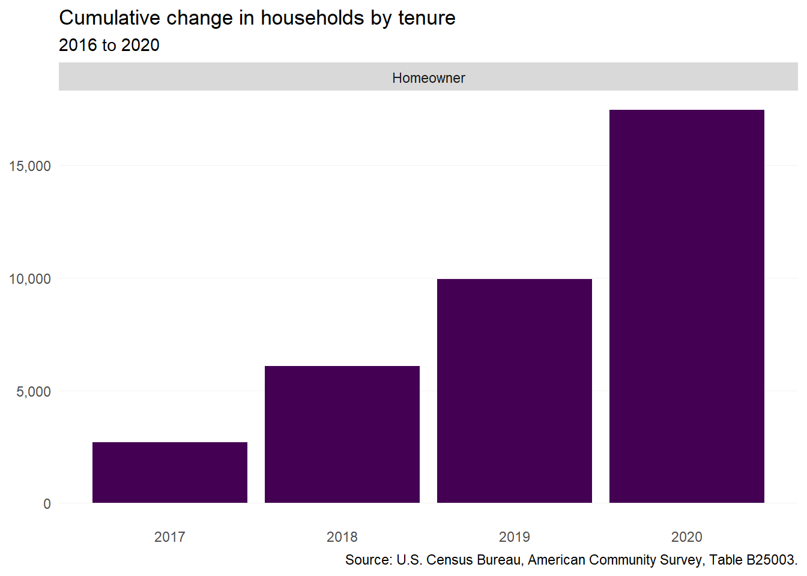
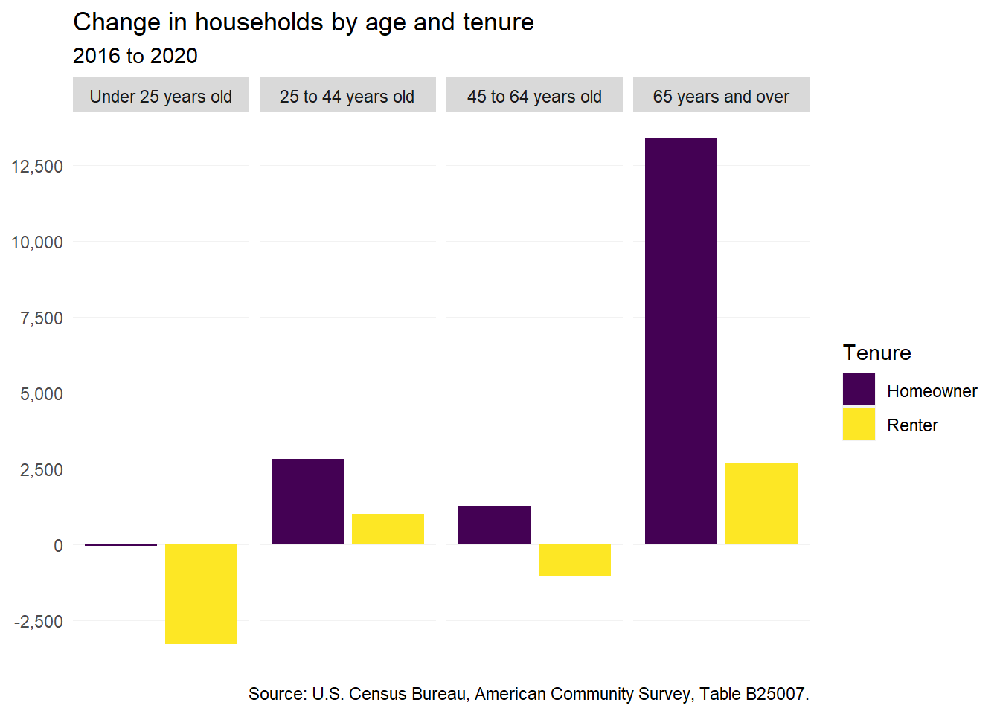
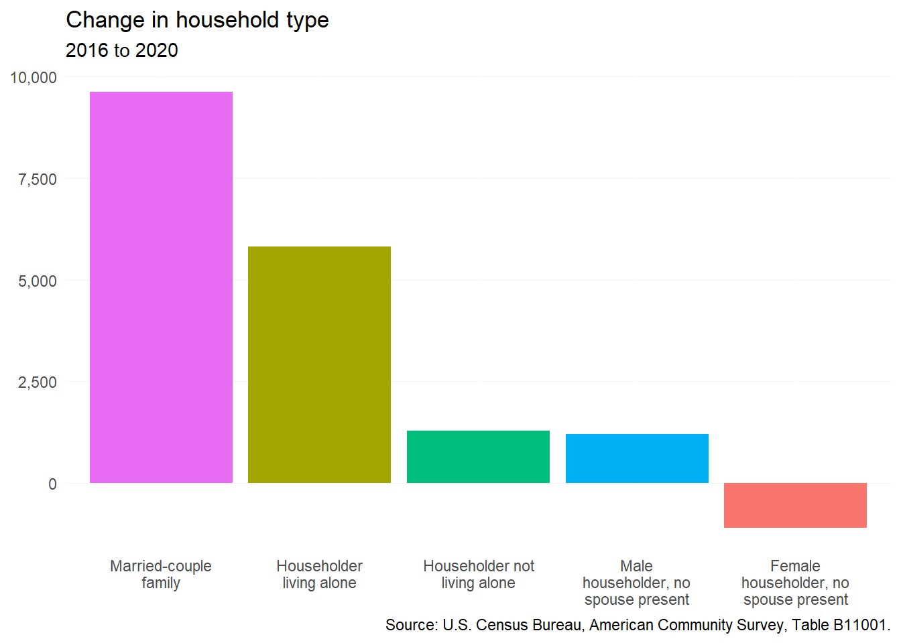
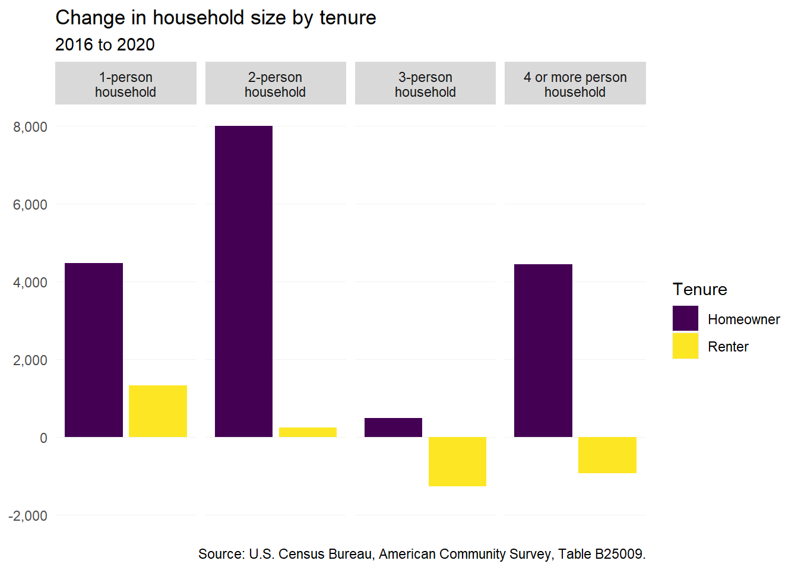
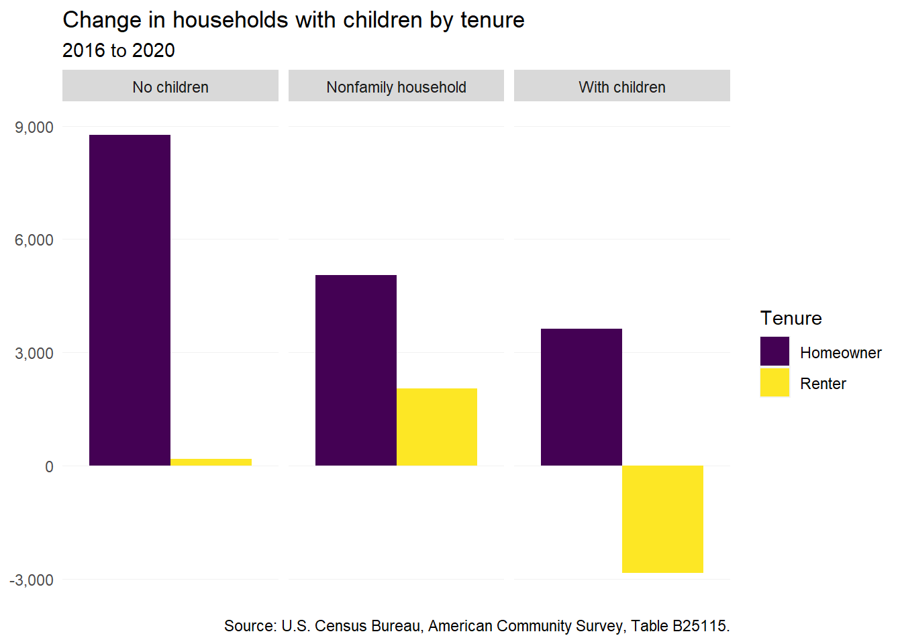
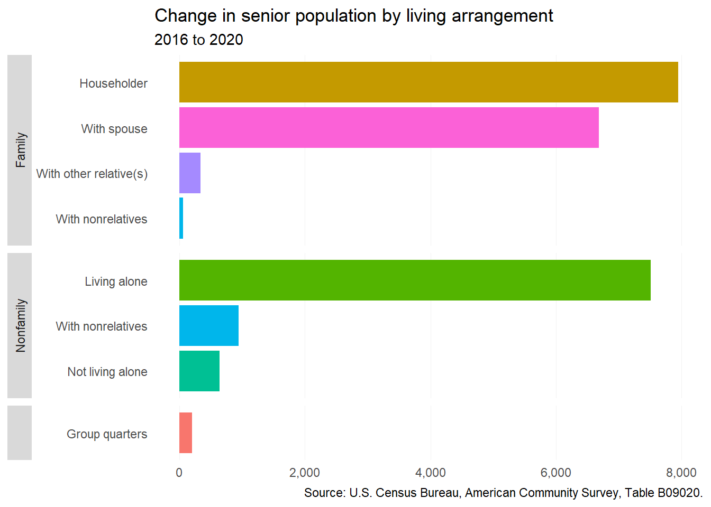
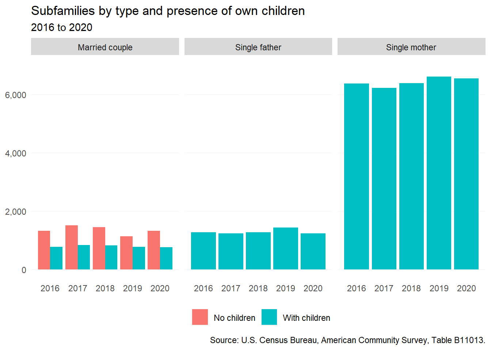
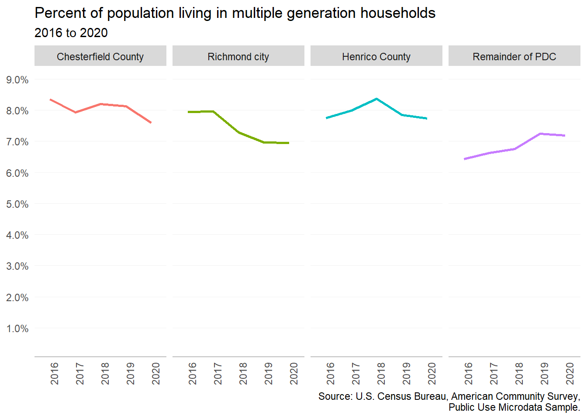
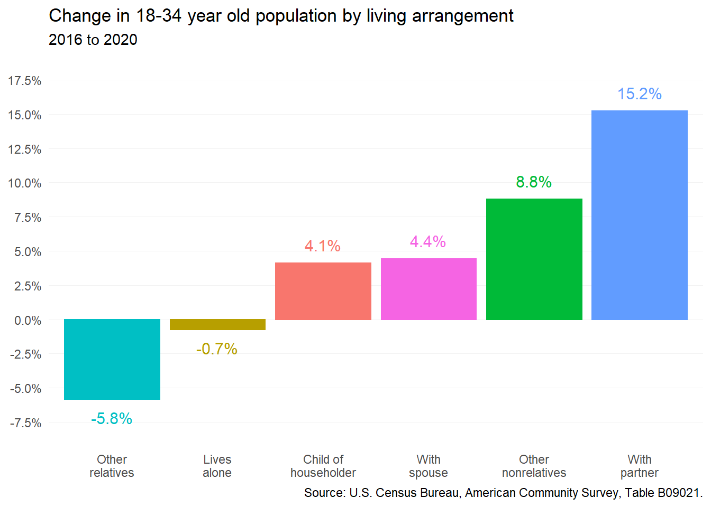

2 Household characteristics
This chapter covers the household trends that influence housing demand across the Partnership for Housing Affordability’s coverage area, including, but not limited to householder age, household size, and multigenerational households.
2.1 Household formation
According to Census estimates, the region gained more than 15,000 households from 2016 to 2020. This growth was driven entirely by new homeowners (17,436). Renter households, instead, saw much slower increases from 2016 to 2019; from 2019 to 2020, the estimated number of renters dropped more than 2,000 for a net loss of 609 over the full period.
This anomalous data should be treated with caution. Lower American Community Survey response rates during COVID-19 were most common among lower-income and lower-educated households most likely to rent. Across the Richmond region, overall ACS response rates declined nearly 10 percent from the 2015-2019 to 2016-2020 collection period.

2.2 Households by age
The single largest growing cohort of households across the region are homeowners 65 years and over. Thanks in large part to youngest baby boomers aging into retirement, this group increased by more than 13,000. Younger homeowners saw much smaller gains.
Among renters, most growth occurred in senior householders. The significant decrease of renter households under 25 (more than 3,200) should be treated with caution, as this population likely had much lower ACS response rates during COVID-19.

2.3 Households by type
Married-couple families continued to be the dominant household type in the region, growing by 9,625 from 2016 to 2020. Living alone also become more common, likely the result of seniors increasingly living on their own. Households headed by single females were the only type to decline; however, this could potentially be attributed to lower ACS response rates among those households during COVID-19.

2.4 Households by size
Two-person homeowning households were by and large the fastest-growing cohort among different size households from 2016 to 2020. There was also a significant increase in the number of homeowners living alone, as well as homeowners with four-person households.
Persons living alone were the only size of renter households that grew with any significance over this period. One potential explanation for the notable decreases in the number of three- and four-person renter households is lower ACS response rates among younger adults living with roommates during COVID-19. This population, which does not include college students living in dorms (“group quarters” are not households in Census methodology), was likely to move back home with parents during the initial phases of the pandemic.

2.5 Households with children
The number of homeowners without children in the region grew significantly (by almost 9,000) from 2016 to 2020. This is likely due in large part to baby boomer parents now living without their children. The number of homeowners in nonfamily households also increased—driven primarily by those now living alone. Families with children were the least common group of homeowners that grew.
The only group of renters that saw significant growth was nonfamily households. This includes both renters that live alone and those that live with non-related roommates. The estimated number of renters with children declined sharply; this may also be a symptom of lower pandemic ACS responses among lower-income working families.

2.6 Senior living arrangements
Since 2016, the region’s senior population increased almost exclusively among three types:
- Seniors who are the head of the household,
- Seniors who are the spouse of the head of the households, and
- Seniors who live alone.
The estimated number of seniors within group quarters (e.g. nursing homes, assisted living facilities) increased by less than 200. This figure should be assessed in context of ACS collection challenges in group quarters settings throughout the COVID-19 pandemic.

2.7 Subfamilies
The Census Bureau defines a subfamily as a group of related individuals who live in the household of someone else. As of 2020, there were approximately 9,850 subfamilies across the region. Two-thirds of those are single mothers living with at least one child of their own. These estimates have remained stable since 2016.

2.8 Multigenerational households
The Census Bureau defines multigenerational households as those with three or more generations. According to the Pew Research Center, the share of the American population in multigenerational households increased from just 7 percent in 1971 to 18 percent in 2021.
However, multigenerational households in the Richmond region are less common than the national average. As of 2020, the share of persons in multiple generation households across the region has stayed between 7 and 8 percent from 2016 to 2020.
Multigenerational households estimates are not available from the standard ACS tables published by the Census Bureau. The data in this section comes from the Public Use Microdata Sample (PUMS), which are available only by special Public Use Microdata Areas (PUMAs) which contain at least 100,000 people.
While PUMA boundaries align with Chesterfield County, Henrico County, and Richmond city, the PUMA containing Hanover County also includes Powhatan, Goochland, New Kent, King William, Charles City counties.
Multigenerational households are slightly more common in the core metro area (Chesterfield, Henrico, and Richmond) than the outlying suburbs. The share of multigenerational households in Chesterfield and Richmond appears to be decreasing slightly, while increasing slightly in the outer counties. The share of Henrico’s population in multigenerational households continues to sit around 8 percent.

2.9 Adult children with parents
Over the past decade, a common stereotype has been that of adult millennial child continuing to live with their parents. While this trope is based in real economic challenges faced by young adults, such as increasing housing costs and student debt, its magnitude can often be overstated.
Today, more than 75,800 adults 18 to 34 years old in the region—about one-in-three—live with their parents. This is more than any other arrangement. However, since 2016, the fastest growing living arrangement for young adults has been with an unmarried partner, followed by other nonrelatives (roommates). In fact, the share of young adults now living with a married spouse increased slightly more than the share still living with parents.
